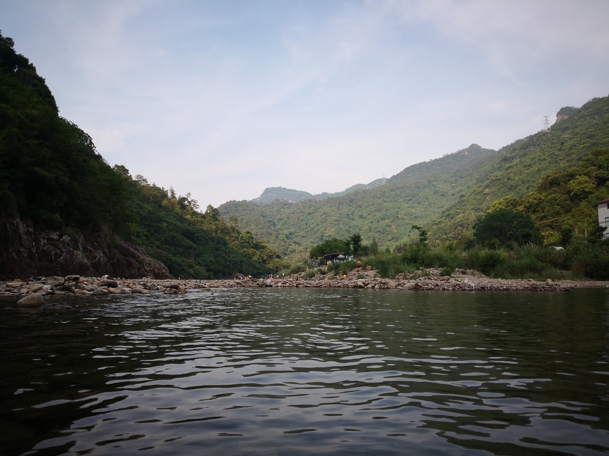

十八重溪在距福建省福州约20公里的闽侯县南通镇境内，发源于县南古崖山尾东麓，为大樟溪下游南岸支流。流域面积约62平方公里，其间水平长度500米以上的溪流有24条，取名“十八”，形容其多。第三批省级风景名胜区。景区内水系发达，干流长约10.8公里，河宽5至40米，水深127；0.5至3米。溪流两岸生长着茂密的常绿阔叶林、次生灌木林，有娃娃鱼、桫椤树等国家一类保护动植物，林中常有弥猴成群出没。
全区有各种各样的峰、岩、崖、谷、洞、石，均由火山岩构成的。区内更有西溪瀑布、乌龙戏珠、大帽山、文笔峰、宝塔峰、三仙洞等景点。游客多从三、四重溪开始游览。
四重溪又称风光岩，附近的有皇冠峰，斜立在峰下有一高8米的独峰。五重溪又称黄坑口，主要景点有石人、石马、石风帆等。石风帆是在干流河道中残留的一块巨石，高出水面5.2米。六重溪、七重溪有鸳鸯洞、流纹岩、三层岩等景点。八重溪有龙潭、知音瀑布等。知音瀑布是当地12个瀑布的代表，瀑高40多米，宽10多米。八重溪与九重溪间为宽40米的溪流所隔，有竹筏过渡。十三重溪以下鲜有人攀。
景区东北部的大帽山，又名古灵山，海拔786.3米。登上山顶，十八重溪山水美景收进眼底。此外，宝塔峰、玉女石、猴洞、倾缸瀑布、天柱瀑布等也各具特色。

友情链接：百度百科